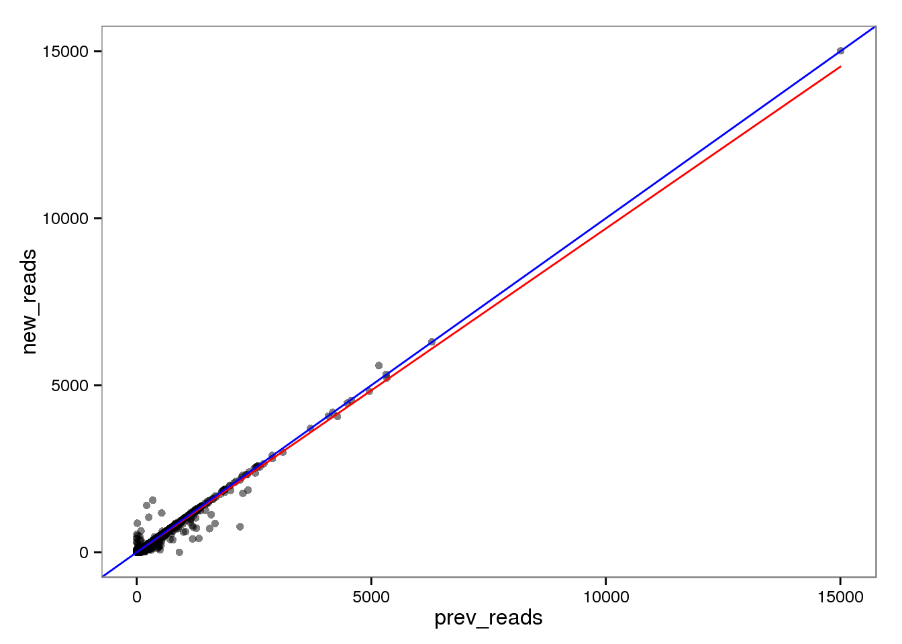
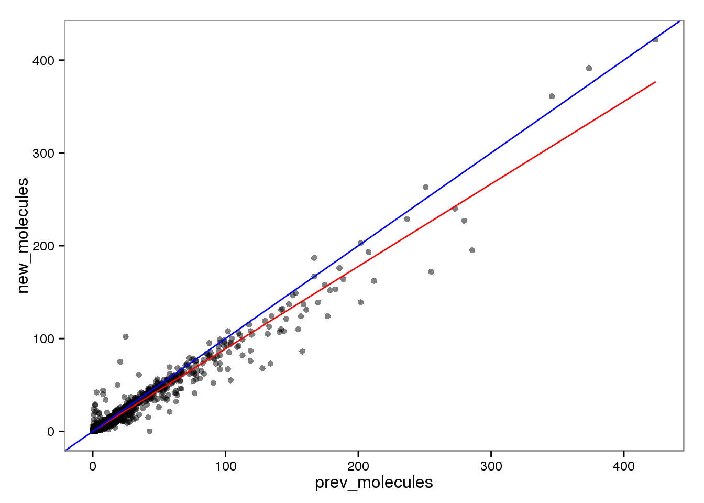
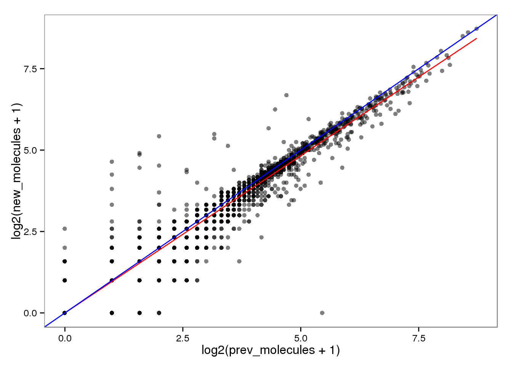
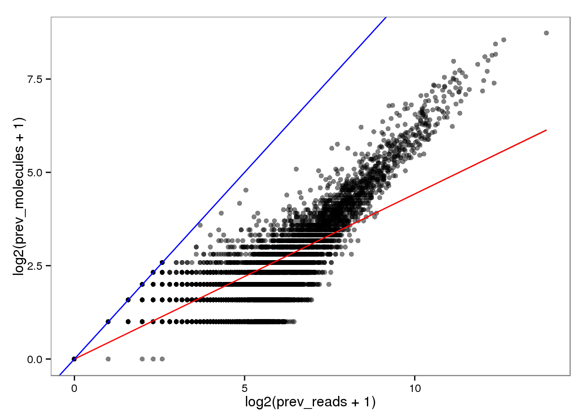
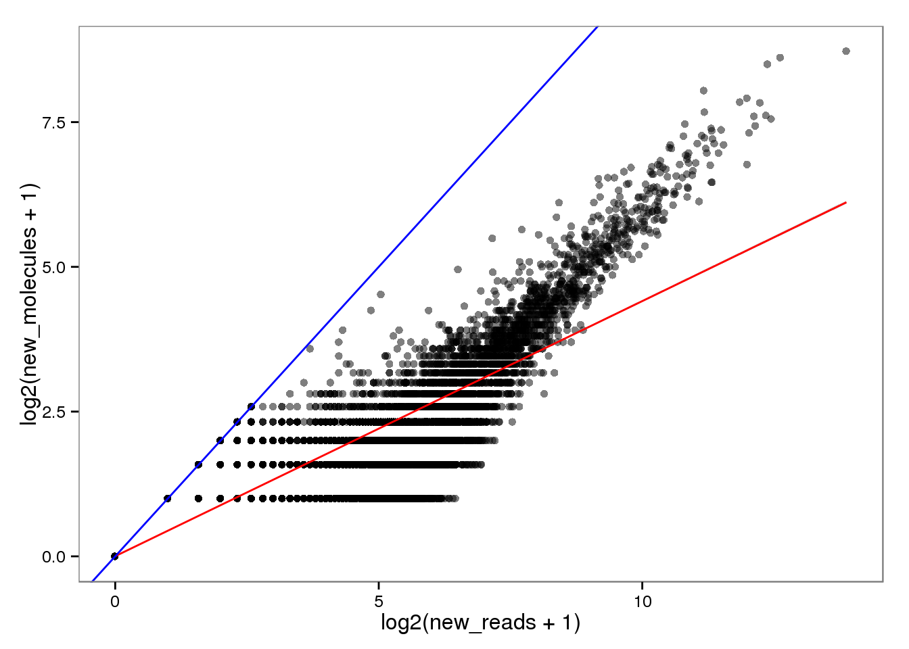
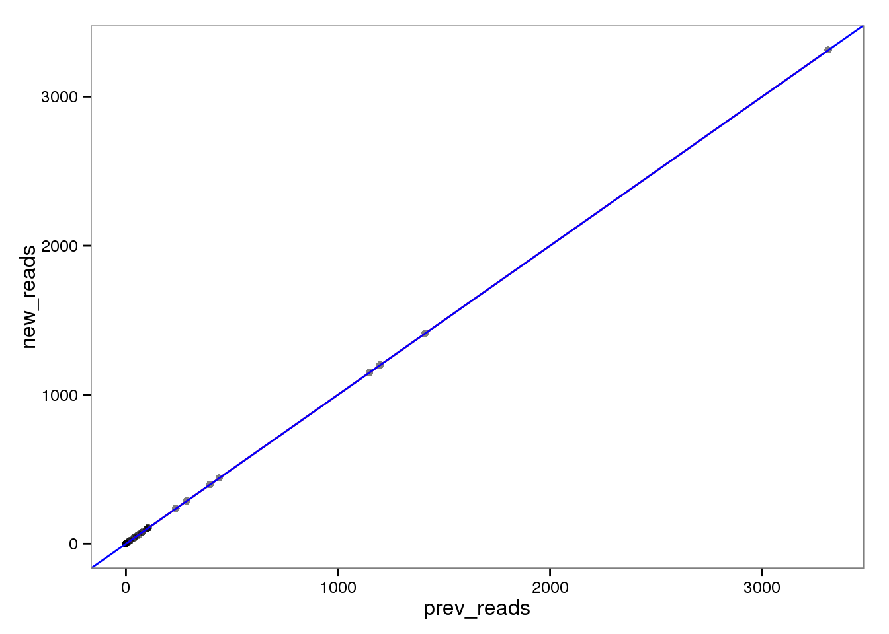
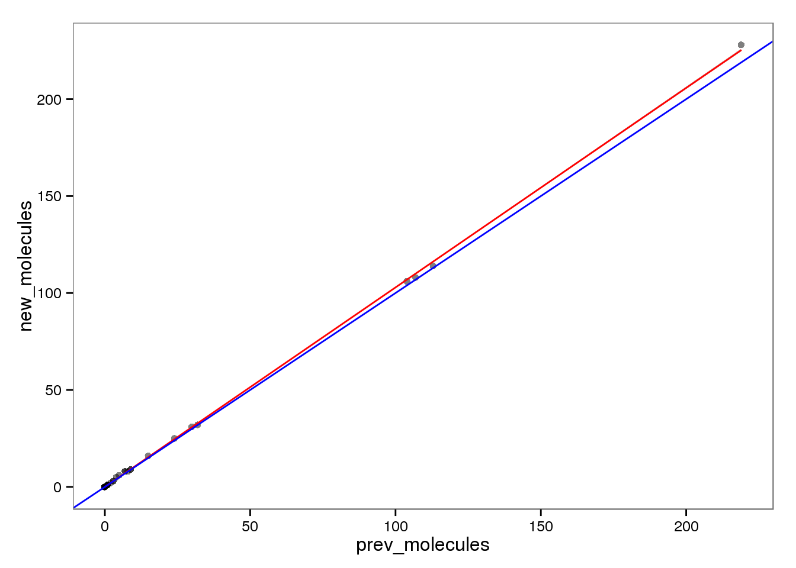
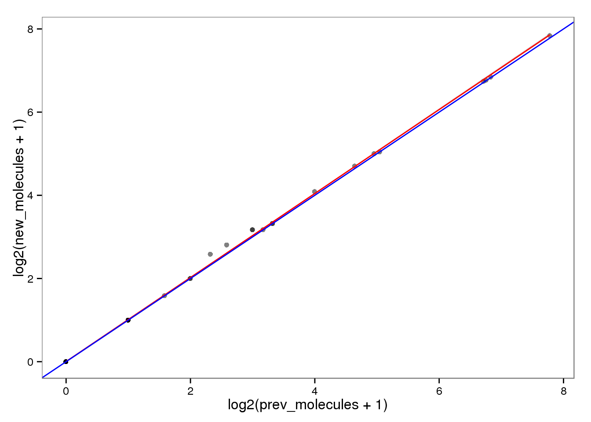
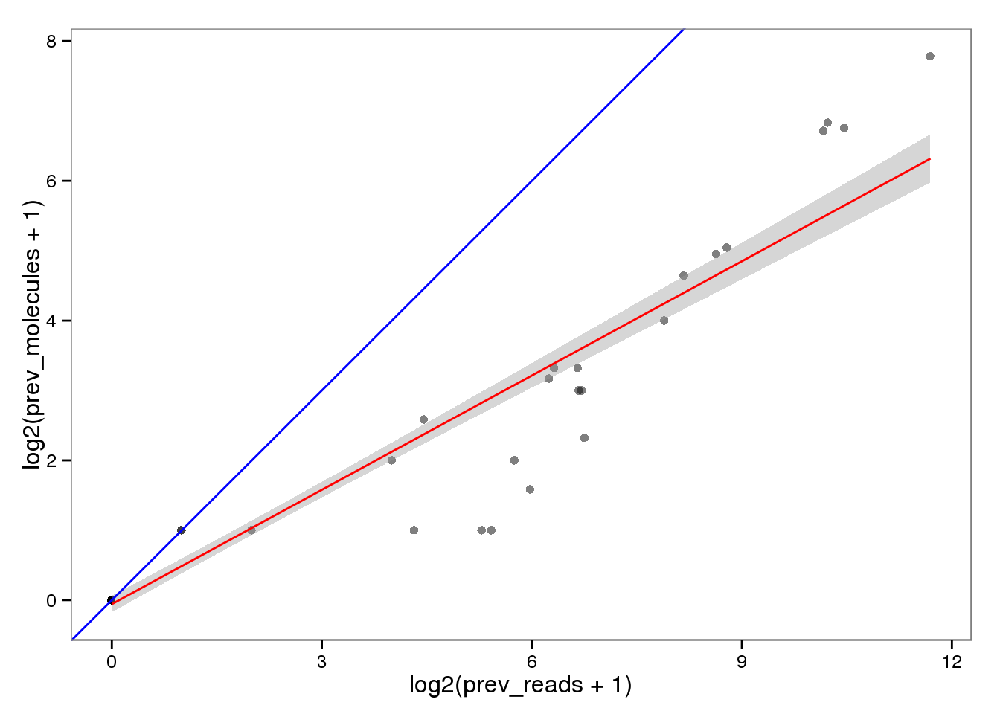

Effect of using read2pos flag with featureCounts
John Blischak
2016-02-18
Last updated: 2016-02-18
Code version: f51613737909d5bd9654cd6318fcff8e9e1ef28a
To avoid assignment errors like the one identified in the analysis to understand the conversion bug, I re-ran featureCounts using the option --read2pos 5. This only considers the 5’ most base. Since the reads are stranded, we do not want to count reads mapping to a gene just because their 3’ end overlaps an exon (or conversely if the 3’ end is unabmiguous but the 5’ is not, we do not want to throw it away). I did a quick check to make sure this was not drastically changing the results. I inspected 19098.r1.A01, which is a quality single cell. I ran the following lines to make files which only contain the gene name and counts (not executed directly by this file).
cut -f1,7 counts/19098.1.G11.GGCAGACT.L003.R1.C6WURACXX.trim.sickle.sorted.genecounts.txt > $ssc/data/new-reads.txt
cut -f1,7 counts-prev/19098.1.G11.GGCAGACT.L003.R1.C6WURACXX.trim.sickle.sorted.genecounts.txt > $ssc/data/prev-reads.txt
cut -f1,7 counts/19098.1.G11.GGCAGACT.L003.R1.C6WURACXX.trim.sickle.sorted.rmdup.genecounts.txt > $ssc/data/new-molecules.txt
cut -f1,7 counts-prev/19098.1.G11.GGCAGACT.L003.R1.C6WURACXX.trim.sickle.sorted.rmdup.genecounts.txt > $ssc/data/prev-molecules.txtlibrary("ggplot2")
theme_set(theme_bw(base_size = 12))
theme_update(panel.grid.minor.x = element_blank(),
panel.grid.minor.y = element_blank(),
panel.grid.major.x = element_blank(),
panel.grid.major.y = element_blank())Input
new_reads <- read.table("../data/new-reads.txt", header = TRUE,
stringsAsFactors = FALSE)
prev_reads <- read.table("../data/prev-reads.txt", header = TRUE,
stringsAsFactors = FALSE)
new_molecules <- read.table("../data/new-molecules.txt", header = TRUE,
stringsAsFactors = FALSE)
prev_molecules <- read.table("../data/prev-molecules.txt", header = TRUE,
stringsAsFactors = FALSE)
stopifnot(grepl("19098.1.G11.GGCAGACT.L003.R1.C6WURACXX", colnames(new_reads)[2]),
grepl("19098.1.G11.GGCAGACT.L003.R1.C6WURACXX", colnames(prev_reads)[2]),
grepl("19098.1.G11.GGCAGACT.L003.R1.C6WURACXX", colnames(new_molecules)[2]),
grepl("19098.1.G11.GGCAGACT.L003.R1.C6WURACXX", colnames(prev_molecules)[2]),
new_reads$Geneid == prev_reads$Geneid,
new_molecules$Geneid == prev_molecules$Geneid,
new_reads$Geneid == new_molecules$Geneid)
d <- data.frame(new_reads = new_reads[, 2],
new_molecules = new_molecules[, 2],
prev_reads = prev_reads[, 2],
prev_molecules = prev_molecules[, 2],
row.names = new_reads$Geneid,
stringsAsFactors = FALSE)
head(d) new_reads new_molecules prev_reads prev_molecules
ENSG00000186092 0 0 0 0
ENSG00000237683 0 0 0 0
ENSG00000235249 0 0 0 0
ENSG00000185097 0 0 0 0
ENSG00000269831 0 0 0 0
ENSG00000269308 0 0 0 0Complete chages in expression
# genes with zero reads that now have reads
sum(d$prev_reads == 0 & d$new_reads != 0)[1] 30# genes with reads that now have zero reads
sum(d$prev_reads != 0 & d$new_reads == 0)[1] 202# genes with zero molecules that now have molecules
sum(d$prev_molecules == 0 & d$new_molecules != 0)[1] 30# genes with molecules that now have zero molecules
sum(d$prev_molecules != 0 & d$new_molecules == 0)[1] 198Discordance problem?
I know that the previous counts were sometimes discordant between the reads and the molecules. In the bug analysis, I found that the gene ENSG00000187583 had 4 reads in 19098.1.G11.GGCAGACT.L003.R1.C6WURACXX but zero molecules. These reads were lost somehow in the remove duplication stage, but based on their strand and start position they should never have been counted in the first place. read2pos worked for this read as now it is no longer assigned to ENSG00000187583.
d["ENSG00000187583", ] new_reads new_molecules prev_reads prev_molecules
ENSG00000187583 0 0 4 0And it wasn’t the only affected gene.
# genes with > 0 reads and 0 molecules
d[d$prev_reads > 0 & d$prev_molecules == 0, ] new_reads new_molecules prev_reads prev_molecules
ENSG00000187583 0 0 4 0
ENSG00000167766 0 0 3 0
ENSG00000172869 0 0 5 0
ENSG00000267645 0 0 1 0# genes with 0 reads and > 0 molecules
d[d$prev_reads == 0 & d$prev_molecules > 0, ][1] new_reads new_molecules prev_reads prev_molecules
<0 rows> (or 0-length row.names)Were the other 3 problem genes also fixed by read2pos like ENSG00000187583?
# genes with > 0 reads and 0 molecules
d[d$new_reads > 0 & d$new_molecules == 0, ][1] new_reads new_molecules prev_reads prev_molecules
<0 rows> (or 0-length row.names)# genes with 0 reads and > 0 molecules
d[d$new_reads == 0 & d$new_molecules > 0, ][1] new_reads new_molecules prev_reads prev_molecules
<0 rows> (or 0-length row.names)Yes!!!!
Endogenous genes
Using read2pos is having an effect, but of course the results are still highly correlated.
ensg_index <- grepl("ENSG", rownames(d))
cor(d[ensg_index, ]) new_reads new_molecules prev_reads prev_molecules
new_reads 1.0000000 0.9206626 0.9898788 0.9053786
new_molecules 0.9206626 1.0000000 0.9193536 0.9823254
prev_reads 0.9898788 0.9193536 1.0000000 0.9234511
prev_molecules 0.9053786 0.9823254 0.9234511 1.0000000Reads
The red line is the least squares best fit. The blue line is y = x.
base_plot <- ggplot(d[ensg_index, ], aes(x = prev_reads, y = new_reads)) +
geom_point(alpha = 0.5) +
geom_smooth(method = "lm", color = "red") +
geom_abline(intercept = 0, slope = 1, color = "blue")
endo_reads <- base_plot
endo_reads
Log transformed.
endo_reads_log <- base_plot %+% aes(x = log2(prev_reads + 1),
y = log2(new_reads + 1))
endo_reads_log
Molecules
endo_molecules <- base_plot %+% aes(x = prev_molecules, y = new_molecules)
endo_molecules
Log transformed.
endo_molecules_log <- base_plot %+% aes(x = log2(prev_molecules + 1),
y = log2(new_molecules + 1))
endo_molecules_log
Conversion of reads to molecules
Previously.
endo_reads2molecules_prev <- base_plot %+% aes(x = log2(prev_reads + 1),
y = log2(prev_molecules + 1))
endo_reads2molecules_prev
New with read2pos.
endo_reads2molecules_new <- base_plot %+% aes(x = log2(new_reads + 1),
y = log2(new_molecules + 1))
endo_reads2molecules_new
ERCC genes
This had no effect on the ERCC reads (correlation = 1). This makes sense because each ERCC is treated as its own chromosome, there is no chance of an ERCC read overlapping more than one feature. On the other hand, the molecules are not perfectly correlated. I’m not sure why they would be any different, which is worrisome, because it suggests I haven’t fixed all the strangeness with read2pos.
ercc_index <- grepl("ERCC", rownames(d))
cor(d[ercc_index, ]) new_reads new_molecules prev_reads prev_molecules
new_reads 1.0000000 0.9914801 1.0000000 0.9898164
new_molecules 0.9914801 1.0000000 0.9914801 0.9998716
prev_reads 1.0000000 0.9914801 1.0000000 0.9898164
prev_molecules 0.9898164 0.9998716 0.9898164 1.0000000Reads
ercc_reads <- base_plot %+% d[ercc_index, ]
ercc_reads
Log transformed.
ercc_reads_log <- ercc_reads %+% aes(x = log2(prev_reads + 1),
y = log2(new_reads + 1))
ercc_reads_log
Molecules
ercc_molecules <- ercc_reads %+% aes(x = prev_molecules, y = new_molecules)
ercc_molecules
Log transformed.
ercc_molecules_log <- ercc_reads %+% aes(x = log2(prev_molecules + 1),
y = log2(new_molecules + 1))
ercc_molecules_log
Conversion of reads to molecules
Previously.
ercc_reads2molecules_prev <- ercc_reads %+% aes(x = log2(prev_reads + 1),
y = log2(prev_molecules + 1))
ercc_reads2molecules_prev
New with read2pos.
ercc_reads2molecules_new <- ercc_reads %+% aes(x = log2(new_reads + 1),
y = log2(new_molecules + 1))
ercc_reads2molecules_new
Session information
sessionInfo()R version 3.2.0 (2015-04-16)
Platform: x86_64-unknown-linux-gnu (64-bit)
locale:
[1] LC_CTYPE=en_US.UTF-8 LC_NUMERIC=C
[3] LC_TIME=en_US.UTF-8 LC_COLLATE=en_US.UTF-8
[5] LC_MONETARY=en_US.UTF-8 LC_MESSAGES=en_US.UTF-8
[7] LC_PAPER=en_US.UTF-8 LC_NAME=C
[9] LC_ADDRESS=C LC_TELEPHONE=C
[11] LC_MEASUREMENT=en_US.UTF-8 LC_IDENTIFICATION=C
attached base packages:
[1] stats graphics grDevices utils datasets methods base
other attached packages:
[1] ggplot2_1.0.1 knitr_1.10.5
loaded via a namespace (and not attached):
[1] Rcpp_0.12.0 digest_0.6.8 MASS_7.3-40 bitops_1.0-6
[5] grid_3.2.0 plyr_1.8.3 gtable_0.1.2 formatR_1.2
[9] magrittr_1.5 scales_0.2.4 evaluate_0.7 httr_0.6.1
[13] stringi_0.4-1 reshape2_1.4.1 rmarkdown_0.6.1 labeling_0.3
[17] proto_0.3-10 tools_3.2.0 stringr_1.0.0 munsell_0.4.2
[21] RCurl_1.95-4.6 yaml_2.1.13 colorspace_1.2-6 htmltools_0.2.6